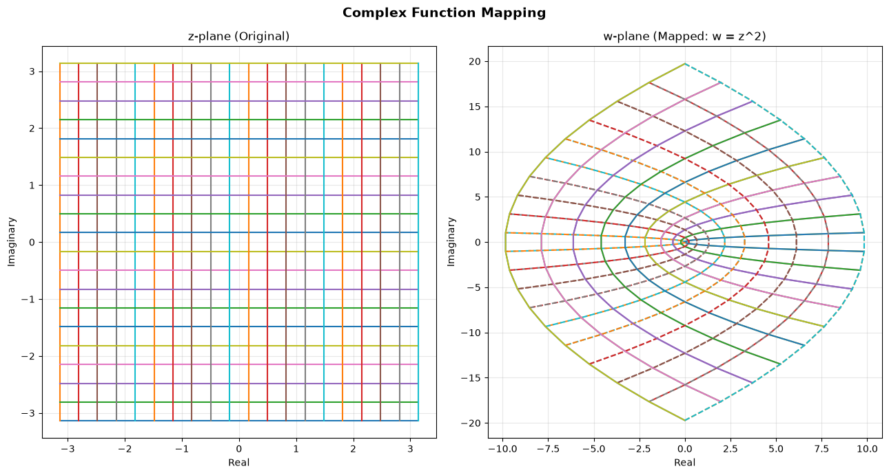

Functions of a Complex Variable
A function in mathematics is a definition/rule that assigns a unique output to each input. That's no different in the context of complex numbers. A function of a complex variable is a rule that assigns a complex number $w$ to each complex number $z$ in a defined domain. We can write this as $w = f(z)$, where $f$ is the function, $z$ is the input complex number, and $w$ is the output complex number.
Given $z = x + iy$ and $w = u + iv$, we can write the function as $f(z) = f(x + iy) = u + iv$. Here $u$ and $v$ are real-valued functions of $x$ and $y$, so the function becomes: $f(x + iy) = u(x, y) + i,v(x, y)$.
In polar form, we can write the function as $f(z) = f(re^{i\theta}) = u + iv$. Here $u$ and $v$ are functions of $r$ and $\theta$, so the function becomes: $f(re^{i\theta}) = u(r, \theta) + i,v(r, \theta)$.
A few things to note:
- The domain of a function is the set of all possible input values for which the function is defined. In the case of complex functions, the domain is a subset of the complex plane. It is also called the domain of definition.
- The range of a function is the set of all possible output values that the function can produce. In the case of complex functions, the range is also a subset of the complex plane.
- The function needs to be well-defined, meaning for each input value in the domain, there should be a unique output value.
- When the domain of definition is not mentioned, it is assumed to be the largest possible domain for which the function is defined. For example, the function $f(z) = \frac{1}{z}$ is defined for all complex numbers except $z = 0$. Therefore, its domain of definition is $\mathbb{C} \setminus {0}$.
Mappings
Functions can be visualized to understand how they transform the input values to output values. This is fairly easy to visualize for functions where only two axes are involved. For example, consider a function $f(x) = x^2$ that maps real numbers to real numbers. We can visualize this function by plotting the input values on the x-axis and the corresponding output values on the y-axis.
For functions of complex numbers, however, we have four axes to consider: the real and imaginary parts of the input complex number, and the real and imaginary parts of the output complex number. This makes it hectic to visualize the function in a single plot. However, with mapping, we can visualize the transformation by considering the input and output complex numbers as points in their own complex planes.
In the diagram below, the graph of the function would need 4 dimensions ($\mathbb{R}^2 \times \mathbb{R}^2$), which we cannot draw. Instead, we draw the input plane and the output plane side by side, and see how points (and curves) in the input plane are carried to the output plane.

# Demonstration of mapping of complex numbers from one domain to another using a function.
import numpy as np
import matplotlib.pyplot as plt
# Points for the z-plane (grid of complex numbers)
start = -3.14
end = 3.14
num_points = 20
real_vals = np.linspace(start, end, num_points)
imag_vals = np.linspace(start, end, num_points)
# Constant imaginary part and varying real part
h_grid = np.zeros((num_points, num_points), dtype=complex)
for i in range(num_points):
x = real_vals + (imag_vals[i] * 1j)
h_grid[i] = x
# Constant real part and varying imaginary part
v_grid = np.zeros((num_points, num_points), dtype=complex)
for j in range(num_points):
y = real_vals[j] + (imag_vals * 1j)
v_grid[j] = y
# The function to map the points
# for the function f(z) = z^2, we can define the mapping as follows:
w_h = h_grid ** 2
w_v = v_grid ** 2
# Plotting the original and mapped points
plt.figure(figsize=(13, 7))
plt.subplot(1, 2, 1)
for i in range(num_points):
plt.plot(h_grid[i].real, h_grid[i].imag)
plt.plot(v_grid[i].real, v_grid[i].imag)
plt.title('z-plane (Original)')
plt.xlabel('Real')
plt.ylabel('Imaginary')
plt.grid(True, alpha=0.3)
plt.axis('equal')
plt.subplot(1, 2, 2)
for i in range(num_points):
plt.plot(w_h[i].real, w_h[i].imag)
plt.plot(w_v[i].real, w_v[i].imag, linestyle='dashed')
plt.title('w-plane (Mapped: w = z^2)')
plt.xlabel('Real')
plt.ylabel('Imaginary')
plt.grid(True, alpha=0.3)
plt.suptitle('Complex Function Mapping', fontsize=14, fontweight='bold')
plt.tight_layout()
plt.show()Limits
The concept of limits, as known in calculus, can be extended to functions of complex variables. With complex functions, a defined neighbourhood around a point in the complex plane is considered. The function must be defined in a punctured neighbourhood of $z_0$, that is, a neighbourhood with $z_0$ itself removed, because the value of $f$ at $z_0$ plays no part in the limit.
The limit of a function $f(z)$ as $z$ approaches a point $z_0$ is denoted as $\lim_{z \to z_0} f(z)$. This limit exists if, for every sequence of complex numbers ${z_n}$ with $z_n \neq z_0$ that converges to $z_0$, the corresponding sequence of function values ${f(z_n)}$ converges to the same value $L$. In other words, the limit exists if the function approaches the same value from all directions in the complex plane as $z$ approaches $z_0$.
By the definition of limits, we can say that the limit of a function $f(z)$ as $z$ approaches a point $z_0$ is equal to $L$ if, for every $\epsilon > 0$, there exists a $\delta > 0$ such that whenever $0 < |z - z_0| < \delta$, it follows that $|f(z) - L| < \epsilon$. This means that we can make the function values arbitrarily close to $L$ by choosing input values sufficiently close to $z_0$.
Continuity and theorems on limits
-
Definition: $f(z)$ is continuous at $z_0$ if $f(z_0)$ is defined and $\lim_{z \to z_0} f(z) = f(z_0)$.
-
Theorem 1: If $\lim_{z \to z_0} f(z) = L$ and $\lim_{z \to z_0} g(z) = M$, then:
- $\lim_{z \to z_0} [f(z) + g(z)] = L + M$
- $\lim_{z \to z_0} [f(z)g(z)] = LM$
- $\lim_{z \to z_0} \frac{f(z)}{g(z)} = \frac{L}{M}$, provided $M \neq 0$
-
Theorem 2: If $f(z)$ is continuous at $z_0$ and $g(z)$ is continuous at $f(z_0)$, then the composition $g(f(z))$ is continuous at $z_0$.
-
Theorem 3: If $f(z)$ is continuous at $z_0$ and $g(z)$ is continuous at $z_0$, then the sum, product, and quotient (if $g(z_0) \neq 0$) of $f(z)$ and $g(z)$ are continuous at $z_0$.
-
Theorem 4: If $f(z)$ is continuous on a closed and bounded region $R$ in the complex plane, then $|f(z)|$ is bounded on $R$ and attains its maximum and minimum values on $R$. (Complex numbers have no ordering, so we compare moduli.)
-
Theorem 5: If $f(z)$ is continuous on a closed and bounded region $R$ in the complex plane, then $f(z)$ is uniformly continuous on $R$.
-
Theorem 6: If $f(z)$ is continuous on a closed and bounded region $R$ in the complex plane, then $f(z)$ is integrable on $R$.
Caution: differentiability implies continuity, but not the other way round. For example, $f(z) = \bar{z}$ is continuous everywhere but differentiable nowhere, and $f(z) = |z|^2$ is differentiable only at $z = 0$. Differentiability needs a stronger condition, namely the Cauchy-Riemann equations.